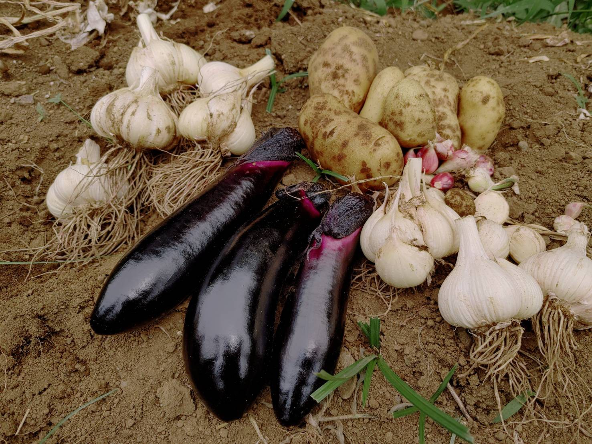
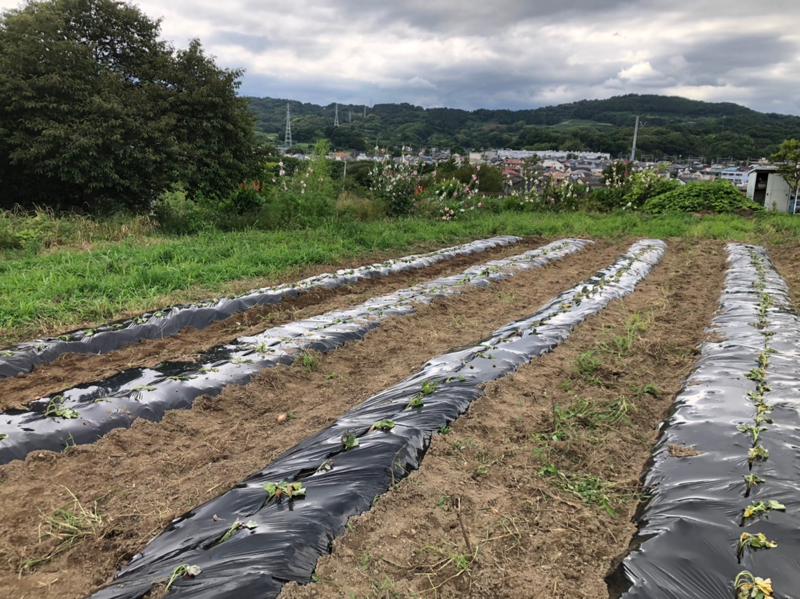
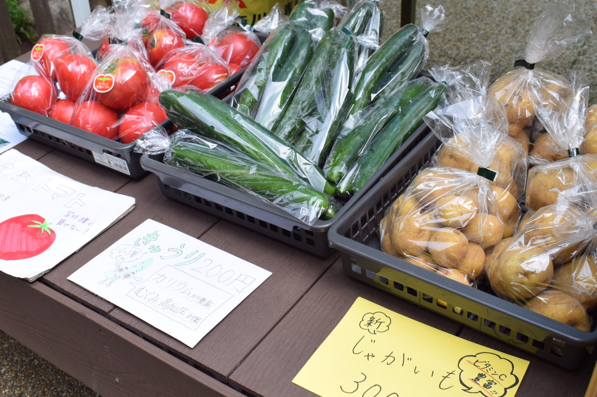

部員インタビュー第一弾！
2021.07.09 かわい
Agrlienの部員に、Agrlienに入った理由、実際の活動の感想などを語ってもらいました！普段の活動の様子を感じてもらえればと思います！
今回は、以下のことについて聞いてみました！
①加入した理由
②実際に活動してみて
③Agrlienでの活動がもたらす影響
④入部を考えている人にひとこと
1人目 ニックネーム：みみたぶ (東京大学3年 三重県松阪市出身)
①加入した理由
3年からのキャンパス移動で以前から所属していたサークルへの参加が難しくなり、新しいサークルを探していたところ、Agrlienを見つけたのがきっかけです。
②実際に活動してみて
農作業をすると、心がすっきりして明るく前向きになれます！会ったばかりの人とでも、農業で一緒に身体を動かすと距離が一気に縮まるので嬉しいです。どの活動も作業を一緒にしながら話ができるので、自然と仲良くなれます。また、現役メンバーからOBOG、農家さんとも関われるのも魅力の一つです。
③Agrlienでの活動がもたらす影響
今年の5月に入会した時は活動の意義は考えていなかったのですが、メンバーやOBOG、農家さんの熱意に刺激を受けました。生産から販売までの現場体験が食を考えるきっかけになっています。私たちの活動を通して、国産食材の未知の価値を感じてほしいです。
④入部を考えている人にひとこと
楽しいし、美味しいし、運動になるし良いこと尽くしです！農学部以外の人も沢山いるので、興味を持った人は是非体験に来て欲しいです！
2人目 ニックネーム：べーおか (東京大学1年 千葉県柏市出身)
①加入した理由
高校1年生の時に、1年間アメリカのイリノイ州の農家さんにホームステイをしながら現地高校に通っていました。放課後や休日に手伝いをしていく中で農業の奥深さや面白さとともに、どれだけ大変な職であるかも学びました。何か大学でも農家さんに関わることのできるサークルを探していたところAgrlien を見つけ、加入を決めました。
②実際に活動してみて
まだ加入したばかりで多くの活動に参加してきたわけではありませんが、１つ大きく感じるのは人の温かさです。沢山の方々の協力があって活動ができているのかなと感じています。
③Agrlienでの活動がもたらす影響
マルシェでは消費者の方と、農作業では農家の方とつながることができてAgrlienの理念の通り、両者のを繋ぎ、お互いが少しではありますが身近になっているのではないかと思います。
④入部を考えている人にひとこと
毎回の活動後に達成感があります!一緒にその達成感を味わってみませんか？
3人目 ニックネーム：アポロ (東京農業大学3年 東京都渋谷区出身)
①加入した理由
普段から農業をしながら地域の方々と出会うことが好きで、全国47都道府県を旅をすることを目標にしています。そんな中、自分の大学以外の学生さんと農業を通して交流したい！という気持ちが段々と大きくなり、他大生が集まったAgrlienを知りました。
②実際に活動してみて
実際に活動に参加してみると、「生産と消費ををつなぐ」という理念のもと活動されていることが本当に感じます。以前初めてマルシェに参加したのですが「つながれる場」というのは本当に魅力的だと思いました。また、メンバーは朗らかな方ばかりで、とても癒される空間です！
③Agrlienでの活動がもたらす影響
「どんな学生がどんな想いをもって、どんな活動をしているのか」これがとても可視化しやすい団体であるため、一般の方々にも認知していただきやすい団体だと考えています。
④入部を考えている人にひとこと
Agrlienの魅力は、メンバーのみならず、熱い想いをもった農家さんや応援してくれる地域の方々とも交流ができるため、多くの方からパワーももらいながら活動できる場所になっています！
いかがでしたでしょうか？Agrlienの現役メンバーの想いが伝わりましたか？Agrlienでは、学年問わず随時メンバーを募集していますので、興味のある方はまずは体験から、お気軽にご連絡ください！
入部・体験はこちらから